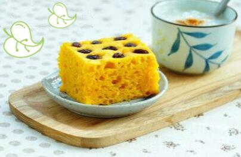
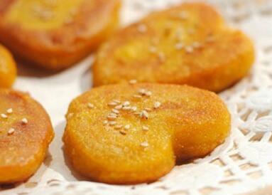
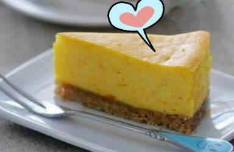
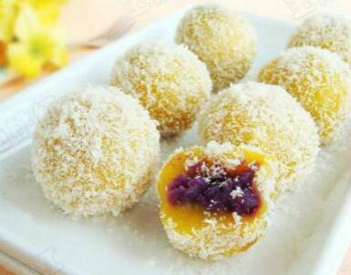

南瓜的营养非常好，含有丰富的

一、南瓜发糕
用料：
南瓜300克（去皮）、面粉220克、白糖15克、酵母3克、温水80-100克、
做法：
1、南瓜去皮切薄片。
2、上锅蒸至熟透，沥出蒸出的水分（留着备用）。
3、南瓜碾成泥，加入白糖拌匀，放凉（不然会烫到酵母）。
4、酵母倒入少许温水（分量内）搅至溶化。
5、倒入晾凉的蒸南瓜的汁、南瓜泥、面粉和剩下的一部分水搅匀（不要一次性倒入所有的水），搅拌好的南瓜面糊呈泥状。
6、模子底部和四周都抹上一层
7、温暖湿润处发酵至2-3倍大。
8、表面放上洗净沥干的

二、南瓜饼
用料：
南瓜、
做法：
1、将南瓜去皮切片放在微波炉蒸笼里，高火10分钟蒸熟（也可以放蒸锅里蒸熟）。
2、蒸熟的南瓜趁热用勺子压成南瓜泥，并拌入适量白糖。
3、准备适量的糯米粉和白糖。
4、将南瓜泥和糯米粉以1：1左右的比例，一点一点加入糯米粉。
5、如果面团太干可加少量清水，直到和成南瓜面团，不沾手即可。
6、把面团分成若干小块，揉圆。
7、把面团压扁，用心形模具压刻出心形。
8、平底锅放少许油，将南瓜饼煎至两面金黄即可。
爱心提示：
1、也可根据自己喜好包入豆沙馅、椰蓉馅等等。
2、表面撒些瓜仁或松子更味佳。
3、做成心形表示爱心，做成圆形表示圆
4、微波炉蒸南瓜泥比较方便，如果用蒸锅的话，水分会比较大。
三、美式南瓜派
原料：
2杯烤熟的南瓜块（200摄氏度烤1小时左右）、1.5杯烤熟的
做法：
1、将所有南瓜馅料的原料放入搅拌机中搅拌均匀晾至冷却。
2、取9寸的派皮，将南瓜馅料加入派皮中，然后用刮刀或勺子抹平表面，放入预热180度的烤箱中，烤45-55分钟，然后冷却1小时，放入冰箱里定型3小时候再享用。如果你等不及，当然也可以直接用啦!

四、南瓜芝士糕
用料：
素起司250克、南瓜泥135克、细砂糖60克、
做法：
步骤一：制作消化饼干底
1、把消化饼干装入保鲜袋、将保鲜袋的口扎紧，用擀面杖碾压保鲜袋里的饼干，直到将饼干碾成粉末状。
2、素黄油加热融化成液态，把粉状的饼干倒入。
3、用工具搅拌至素黄油和饼干粉末完全混合均匀，成为湿润的面糊状。
4、把搅拌好的饼干面糊装入模具底部，用勺子背部压紧。把装好饼底的模具放入冰箱冷藏，到饼底变硬就可以使用了。
步骤二：做南瓜起司素蛋糕
1、南瓜去皮去籽以后，切成小块蒸熟（或放到微波炉里转两三分钟），直到用筷子可以轻松扎透。用擀面杖的一头把南瓜肉压成泥。
2、素起司室温软化以后，加入细砂糖用打蛋器打到顺滑无颗粒的状态。
3、倒入南瓜泥，用打蛋器搅打均匀。
4、倒入豆奶、肉桂粉、柠檬皮屑，再次搅打均匀成为素起司糕糊。
5、把素起司糕糊倒入已经铺好消化饼干底的模具里。
6、把模具放入烤盘，在烤盘里倒入热水，水的高度约为起司糕糊高度的1/2。把烤盘放入预热好160度的烤箱，烤1个小时左右，直到南瓜素糕完全凝固，用手触摸没有流动感，并且表面呈微金黄色即可出炉。
7、出炉后的素糕待冷却后，放入冰箱冷藏4个小时以上再脱模食用。

五、椰香南瓜
用料：
紫薯、南瓜、糯米粉、色拉油、白糖、椰蓉
做法：
1、紫薯蒸熟，然后去皮，碾成泥（喜欢甜的，可适量加些白糖）。
2、南瓜切块蒸熟，去皮，碾成泥。
3、在南瓜泥中加入糯米粉。
4、揉成较软的面团。
5、取一小块面团，按扁，再放入馅料。
6、团成小球。
7、蒸锅的笼屉上刷一层薄色拉油，将糯米球摆放在上面，大火蒸十分钟。
8、取一盘子，铺上椰蓉，趁热取出糯米球，放入椰蓉丝中滚几下，使糯米球外粘满椰蓉，晾凉即可。